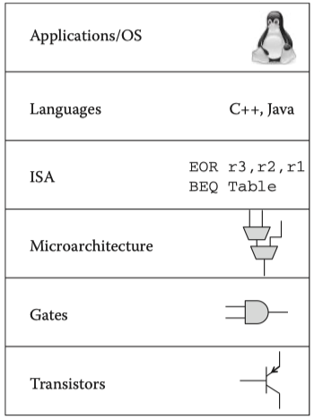

CPU Architectures
有5种指令集最为常见，它们构成了处理器领域的5朵金花。
- x86——硕大的大象
- ARM——稳扎稳打的蚁群
- MIPS——优雅的孔雀
- Power——昔日的贵族
- C6000——偏安一隅的独立王国
This article is about the collection of datasheet/textbooks/references on the three major mainstream CPUs.
Arch#
Architecture = ISA(Instruction set architecture) + Microarchitecture.

ARM Assembly Language: Fundamentals and Techniques, 2nd Edition - 17 ARM, Thumb and Thumb-2 Instructions
Keeping in mind that a processor’s microarchitecture and a processor’s instruction set are two different things. They often get developed at the same time, but it is possible for a given microarchitecture to be modified only slightly to support additional instructions, adding more control logic and a bit more datapath, adding registers, etc.

ARM 64-Bit Assembly Language - CHAPTER 3 Load/store and branch instructions
The part of the computer architecture related to programming is referred to as the instruction set architecture (ISA). The ISA is a contract between the hardware and the software. It defines the set of instructions and the set of registers that the hardware must support. How the hardware actually implements the ISA is called the microarchitecture, and it is not defined by the ISA. Assembly programmers can write code that will work across a spectrum of different processor implementations. As long as the software and the hardware are both built around the same ISA, they will be compatible. The ISA is an effective interface between hardware-the data paths and processing elements–and software, because it creates an abstraction that allows each side to be imagined to function independently.
Intel#
Intel Architecture
datasheet#
Intel® 64 and IA-32 Architectures Software Developer Manuals
IA-64 Application Developer’s Architecture Guide
textbooks#
- 《C语言标准与实现》，姚新颜，2004 - #1 基础知识
- 《深入理解计算机系统》，Randal E. Bryant & David R. O'Hallaron, 2015, 3e - 第3章 程序的机器级表示
- 《老码识途-从机器码到框架的系统观逆向修炼之路》，韩宏，2012 - 第1章 欲向码途问大道，锵锵bit是吾刀
x86 汇编语言：
- 《汇编语言》，王爽，2019，4e
- Professional Assembly Language(IA32), Richard Blum, 2005
- Assembly Language For X86 Processors, KIP R. IRVINE, 2014, 7e
- Introduction to 64 Bit Assembly Programming for Linux and OS X, Ray Seyfarth, 2014, 3e
- Low-Level Programming: C, Assembly, and Program Execution on Intel® 64 Architecture, Igor Zhirkov, 2017
- Windows 64-bit Assembly Language Programming Quick Start: Intel X86-64, SSE, AVX, Robert Dunne, 2018
- Modern X86 Assembly Language Programming: Covers X86 64-bit, AVX, AVX2, and AVX-512, Daniel Kusswurm, 2023, 3e
references#
The x86 architecture is the weirdo: 1: 2, 3
The Intel 80386: part 1 ~ part 17
The x86-64 processor (aka amd64, x64): Whirlwind tour
ARM#
Acorn RISC Machine(1978) -> Advanced RISC Machine(1990).
Arm defines three architecture profiles: Application (A), Real-time (R), and Microcontroller (M).
ARM architecture family- Cores
docs#
Instruction Set Architecture:
Arm Architecture Profiles:
Learn the Architecture Guides – Arm®
- Introducing the Arm architecture
- Instruction Set Assembly Guide for Armv7 and earlier Arm architectures Reference Guide
- A64 Instruction Set Architecture Guide
- AArch64 memory management Guide + examples
- Memory Systems, Ordering, and Barriers
- Introducing Neon + Optimizing C code with Neon intrinsics
A-Profile Architecture:
- Arm Armv8-A Architecture Registers.pdf
- Arm A-profile Architecture Registers
- Arm A-profile A32/T32 Instruction Set Architecture
- Arm A-profile A64 Instruction Set Architecture
- Arm Architecture Reference Manual for A-profile architecture.pdf - overlength
- ARM Cortex-A Series Programmer's Guide for ARMv8-A
M-Profile Architecture:
- ARMv7-M Architecture Reference Manual.pdf
- Armv8-M Architecture Reference Manual.pdf
- Introduction to the Armv8-M Architecture and its Programmers Model User Guide
textbooks#
- ARM Assembly Language: Fundamentals and Techniques, 2nd Edition - eBook@Amazon, pdf, William Hohl, Christopher Hinds, 2014
- Assembly Language Using the Raspberry Pi: A Hardware Software Bridge, Robert Dunne, 2017
-
Modern Assembly Language Programming with the ARM Processor, Larry D Pyeatt, 2016
- ARM 64-Bit Assembly Language, Larry D Pyeatt & William Ughetta, 2019
-
Raspberry Pi Assembly Language Programming: ARM Processor Coding, Stephen Smith, 2019
-
Modern Arm Assembly Language Programming: Covers Armv8-A 32-bit, 64-bit, and SIMD, Daniel Kusswurm, 2020
- Blue Fox: Arm Assembly Internals and Reverse Engineering, Maria Markstedter, 2023
- Computer Organization and Design ARM Edition: The Hardware Software Interface, David A. Patterson, John L. Hennessy, 2016 @ustc
references#
RISC-V vs ARM: A Comprehensive Comparison of Processor Architectures
A Comparative Study on the Performance of 64-bit ARM Processors
The Old New Thing:
EECS 373: Design of Microprocessor-Based Systems - ARM_Architecture_Overview.ppt
MIPS#
Microprocessor without Interlocked Pipeline Stages
MIPS
MIPS architecture processors
官网：MIPS Processor, RISC-V, Innovate Compute
datasheet#
amazonaws.com:
- MIPS® Architecture For Programmers Volume I-A: Introduction to the MIPS32® Architecture - 2016
-
MIPS® Architecture for Programmers Volume II-A: The MIPS32® Instruction Set Manual - 2016
-
MIPS® Architecture For Programmers Volume I-A: Introduction to the MIPS64® Architecture - 2014
- MIPS® Architecture For Programmers Volume II-A: The MIPS32® Instruction Set - 2013
ustc.edu:
- MIPS64® Architecture For Programmers Volume I: Introduction to the MIPS64® Architecture - 2005
- MIPS64® Architecture For Programmers Volume II: The MIPS64® Instruction Set - 2005
- MIPS64® Architecture For Programmers Volume III: The MIPS64® Privileged Resource Architecture - 2005
SYSTEM V APPLICATION BINARY INTERFACE MIPS RISC Processor Supplement - 3rd Edition
textbooks#
- See MIPS Run, Dominic Sweetman, 2006, 2e
- Computer Organization and Design RISC-V Edition: The Hardware Software Interface, David A. Patterson & John L. Hennessy, 2017 @ustc
references#
assembly - where can I find a description of all MIPS instructions
stanford - MIPS
MIPS architecture overview
Introduction to the MIPS Processor
Introduction to the MIPS Architecture and Assembly, 2021
MIPS Assembly Language Programming, 2002
Programmed Introduction to MIPS Assembly Language, 2015
COE 301 Lab - Computer Organization - Introduction_MIPS_Assembly
MIPS Assembly Language (CS 241 Dialect), 2022
Harvard CS 161:
nju-swang: Lecture 24: Instruction Pipeline(指令流水线)
The Old New Thing: The MIPS R4000 - part 1 ~ part 15
refs#
Computer Architecture Lecture 3: ISA Tradeoffs
RISC-V Architecture: A Comprehensive Guide to the Open-Source ISA
《ARM 与 x86》 - 作者：王齐
《大话处理器》 - 万木杨 著